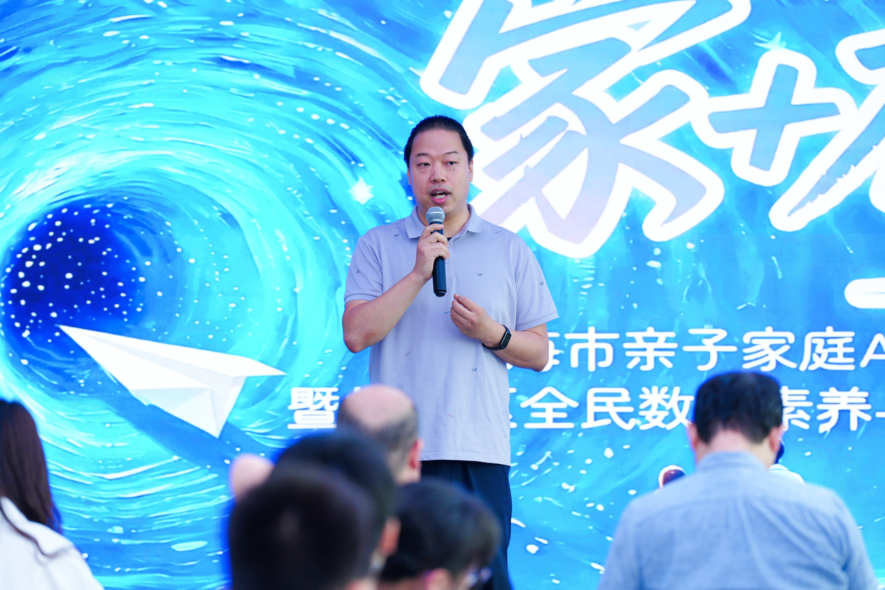
妇联「家+有AI」父女同台（人民网报道）
20 年技术沉淀，横跨国家级直播保障、政企内容生产、AI 工作流搭建与教育创新实践。
擅长把复杂业务 SOP 转化为可复制、可落地、可持续演进的 AIGC 解决方案，让 AI 真正服务于政务传播、公共服务与每一个家庭。
20 年技术背景转型 AI 产品经理，把业务 SOP 转化为可落地的工作流与结构化内容机制
AI 产品经理、AIGC 实战专家、自媒体主理人。精通将业务 SOP 转化为 Coze 工作流、智能体（Agent）与 RAG 知识库，擅长撰写高可用、结构化的 Prompt 与可复用的 Claude Code Skills。能够把复杂的「新质生产力」转化为通俗易懂的跨圈层科普，稳定交付到政务宣传、央国企产业赋能、法律/安全/教育等专业场景，以及女性与家庭数字素养、亲子教育与数字化美育等多维真实场景。
从技术底座、内容生产到项目交付全链路理解业务，能够将复杂 SOP 梳理为 Coze 工作流、智能体调用链与结构化执行方案。
既做过国家级重大活动直播保障，也能把 AIGC 能力应用到政企宣传、公共传播、教育赋能等真实业务场景中，强调稳定性与实用价值。
持续通过公开分享、训练营辅导、公益科普和内容运营推动 AI 普及，帮助组织与个体理解并使用 AIGC，缩短「知道」到「会用」的距离。
从内容到流程，从工具到方法，让 AI 真正服务于业务效率、公众沟通与教育创新
面向政企宣传与大型活动传播，优化内容生产、视觉表达与信息触达效率，把 AI 能力嵌入正式业务表达。
通过工作流设计和智能体能力，把经验型流程转化为可复制的标准化协作方案，服务于内容标准化与知识复用。
聚焦 AI 与家庭教育、教师成长、亲子共创结合，形成「玩中学」的实践路径，化解抵触、自然发生。
适配论坛、展会、研讨会和重要活动中的内容准备、现场表达、视觉辅助和技术协同，保障高压现场稳定交付。
以实战项目验证方法论，用可见成果建立专业信任
受邀担任上海智慧城市发展研究院主办的「AI创想SHOW——开启智能办公新体验」专题培训讲师，主讲《AI智能体工作流实战——法律人自动化助理与知识库搭建》。基于扣子（Coze）平台，系统讲解智能体工作流核心参数与节点，手把手带领学员完成合同审查自动化工作流与法律专业知识库（RAG）构建。
受邀为中车青岛四方机车车辆股份有限公司「人工智能全栈技术培训班」主讲《国产大模型与行业应用》课程。从「大模型是知识放大器」切入，全景拆解 DeepSeek、通义千问、文心一言等国产大模型，并结合轨道交通场景解析中车自研「风驰/轩构/轩知/轩鉴」行业大模型在仿真、设计、安全监测与故障检测环节的落地实践。
受邀担任妇联「家+有AI」主题活动总策划，负责整体方案策划、内容设计与现场节奏把控，并首次带着女儿同台登台做联合分享，以真实亲子共创案例生动呈现 AI 在家庭陪伴、家庭教育与家庭表达场景中的温度与可能。活动得到人民网官方专题报道，成为 AI 赋能家庭关系与女性群体数字化素养提升的代表性案例。
受邀担任上海市信息网络安全管理协会主办的「人工智能安全与发展沙龙」活动主持人，连续主持三场圆桌论坛。围绕人工智能安全治理、产业发展与场景落地等核心议题，串联行业专家与企业代表展开高质量对话，兼具议题把控、现场节奏掌控与跨界观点整合能力。
受邀参与 WaytoAGI 线下亲子场分享会，围绕 AI 共学、亲子共创与家庭场景下的 AIGC 实践展开交流，结合真实案例输出可被家庭复用的 AI 使用路径与陪伴式学习方法，推动 AI 能力在 C 端家庭场景的友好落地。
受上海消防邀请，在上海消防基地面向全市消防宣传员开展「AI赋能消防宣传实战特训营」专题培训。课程围绕消防宣传内容生产全流程，系统讲授政策解读转译、案例脚本生成、分镜拆解、即梦生图、图生视频与剪映拼接，结合《消防宣传AI提示词手册》与「五步生图提示词」方法论，帮助宣传岗位快速转化为可落地的宣传生产力。
受邀在湖南师范大学美术学院为 20 组 3-6 年级亲子家庭授课，围绕 AI 通识启蒙、纸上原型图设计、极限测试与 Debug 实操展开系统带教。通过引导孩子主动给 AI「找茬」，反复调试并完成路演展示，帮助家庭在共创中提升逻辑思维、抗挫折能力与表达自信，验证「玩中学 AI，亲子共创解决问题」的教育方法论。活动获湖南省委官方主流媒体「红网」深度专题报道。
联合上海市人工智能行业协会，为青浦区团委干部开展科普讲座。以通俗易懂的语言对复杂智能体技术进行「祛魅」，有效提升基层政务干部的数字素养与前沿科技治理洞察力。
作为 AIGC 技术专家与创新实践代表出席（联合主办：杨浦区委、上海团市委、中少总社），向 160 余位政府领导及出版界专家汇报「AI 赋能亲子阅读与新大众文艺」成果。现场运用前沿技术为与会领导生成数字艺术「次元合影」，直观展示新质生产力对传统文化产业的赋能潜力，获「共青团中央」官方专门记录与报道。
受邀作为特邀专家参与线下交流活动，面向工作室学员及全国优秀班主任代表开展「AI 赋能教育场景」专题宣讲。紧密结合一线教师专业成长、学生班级数字化管理与家校数字互动等实际需求，系统性输出可落地的 AIGC 实践范式与教学研修思路，推动前沿大模型技术与体制内教育研修体系的深度融合。
在「火创新章 云耀杨浦」主题大会上，作为园区重点生态企业代表受邀登台发表演讲，分享 AI 智能体在实际产业应用领域的探索经验，其前瞻性视野与落地能力受到出席的杨浦区委书记等领导高度评价。
在徐汇西岸国际会展中心受邀担任「OpenClaw 智能体全流程技术实操」全天工坊主讲人，为行业开发者与政企数字化代表提供从环境配置到自动化工作流搭建的深度技术剖析与演练。
受邀担任上海市经信妇工委主办的「她力量·AI未来」创新训练营讲师，聚焦 AI 视频生成等前沿技术，为女性科技工作者及政企骨干提供专业技术趋势解读，助力数字时代的产业生态创新发展。
以「得到 2025 AI 年度报告实干家」身份做客直播间，分享「化解抵触情绪，怎么用 AI 让教育在『玩』中自然发生」，确立了 AI 亲子教育专家形象。
作为杨浦区委网信办主办、旨在拉平大众信息差的市级公益项目核心讲师长期深耕。凭借突出的科技普惠贡献，荣获杨浦区委书记亲自授奖的「优秀导师」称号，并作为代表向全社会发表数字赋能主题倡议。
作为上海市级标杆性青年创新创业矩阵项目「AIGC 创新创作训练营」特邀导师全程参与，辅导学员团队利用 AIGC 工具实现业务模式升级与技术落地，完成从创意构思到落地的完整实践链路。
技术总负责第五届进博会与 CCTV 合作 7×24 小时慢直播，连续 6 年保障核心论坛直播零故障，体现出在国家级重点活动中的稳定性、跨团队协同能力和现场应变能力。
率先引入 5G 及数字人技术制作政企宣传片，通过数字人与智能化流程优化整体产出方式，使整体制作效率提升 50%。
来自论坛现场、专题分享、荣誉合影与案例实拍的真实记录，图片以 4:3 呈现

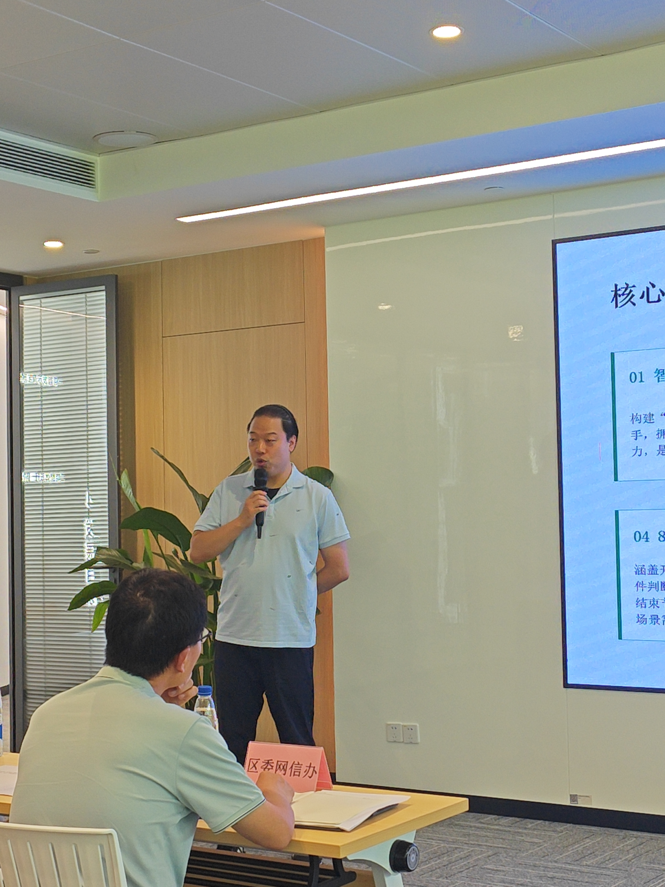
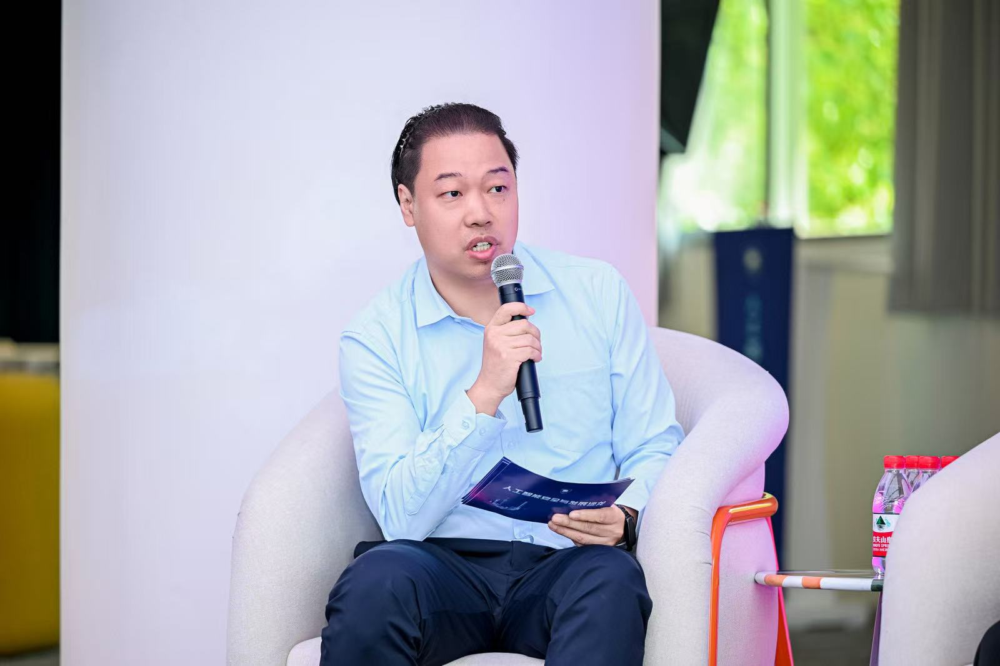
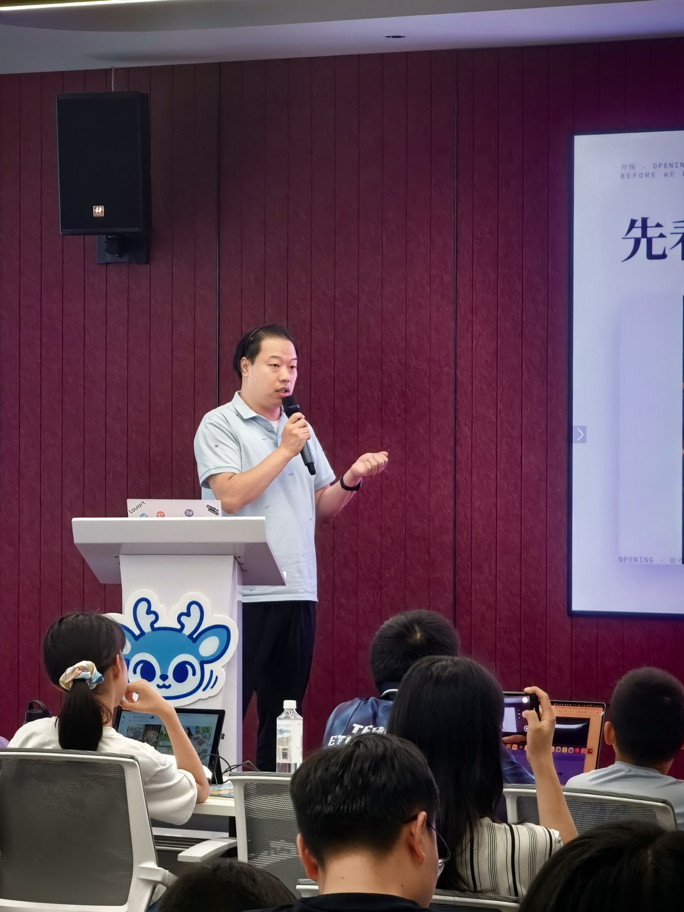
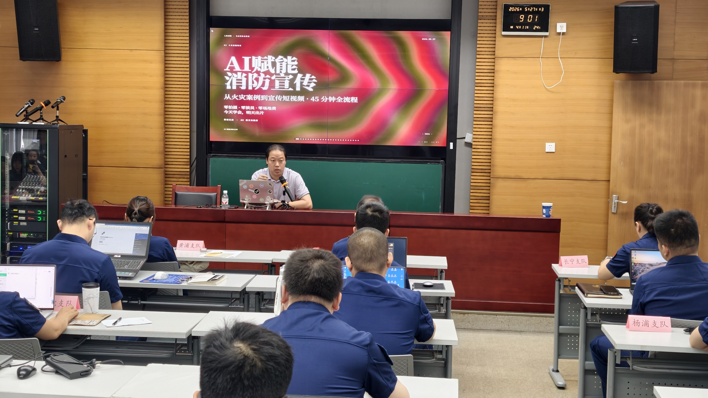
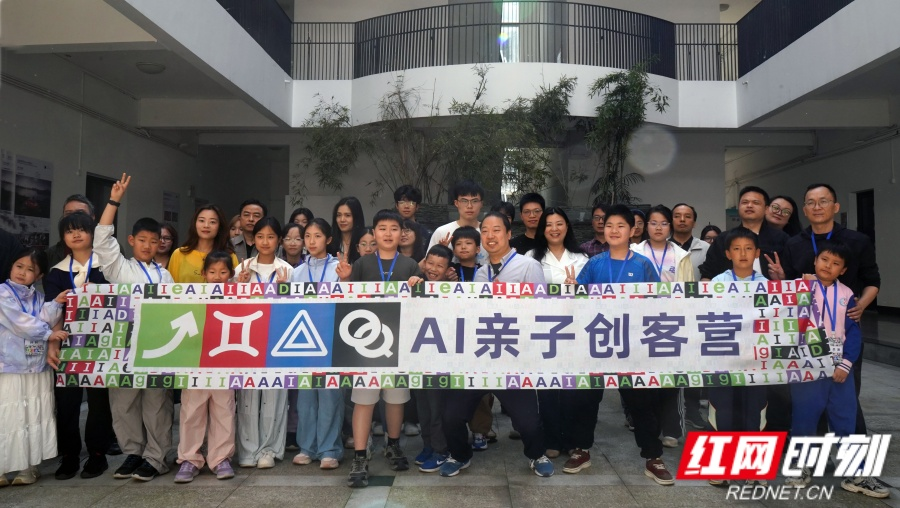
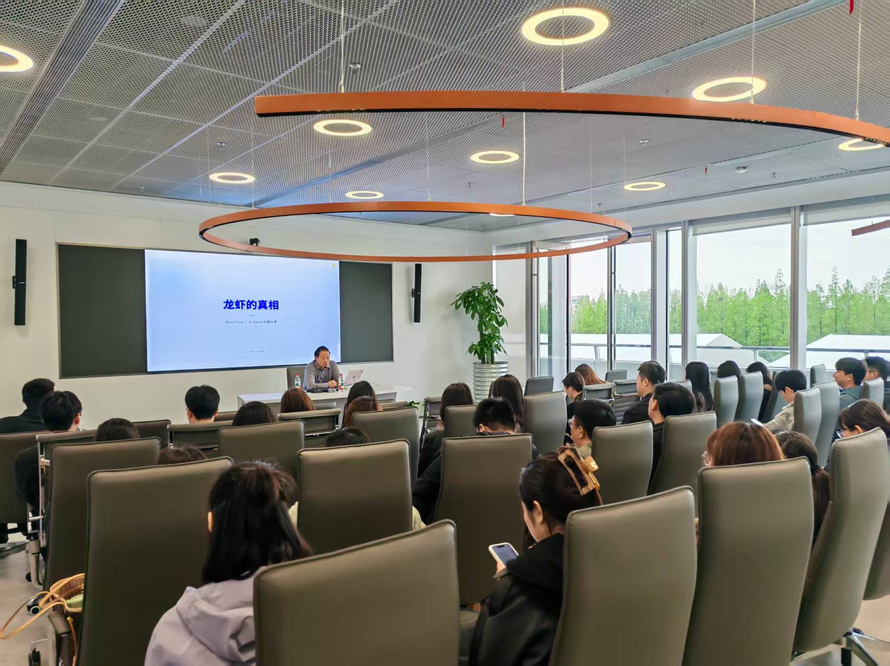
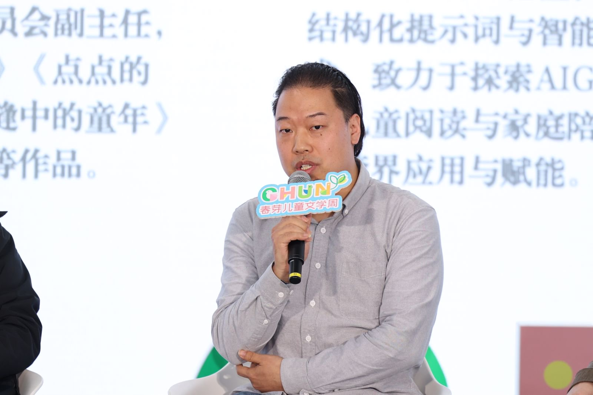
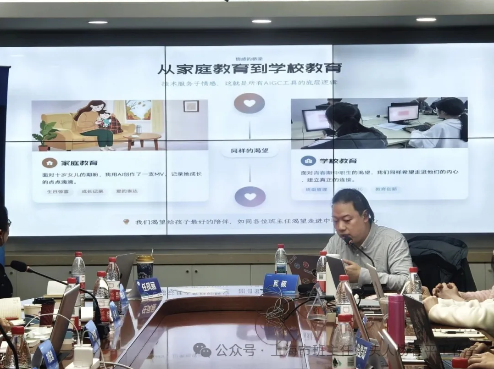
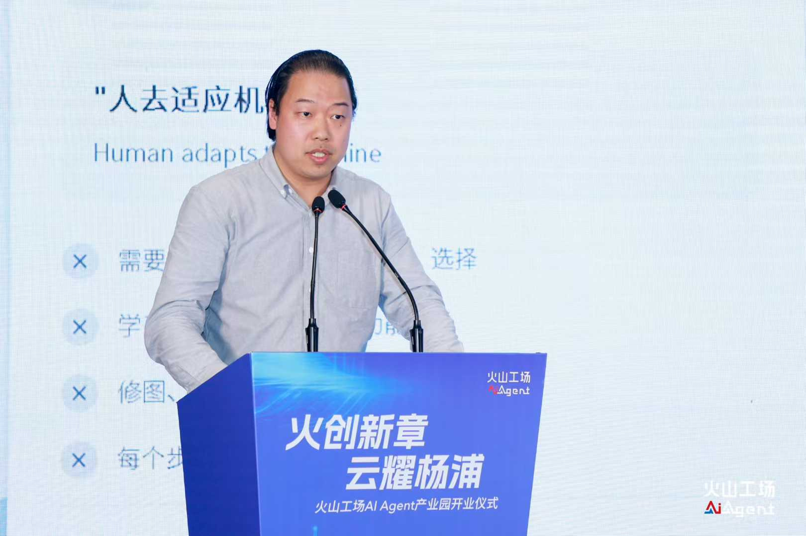
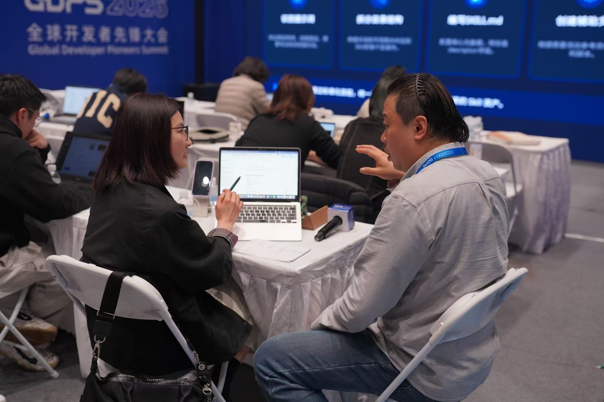
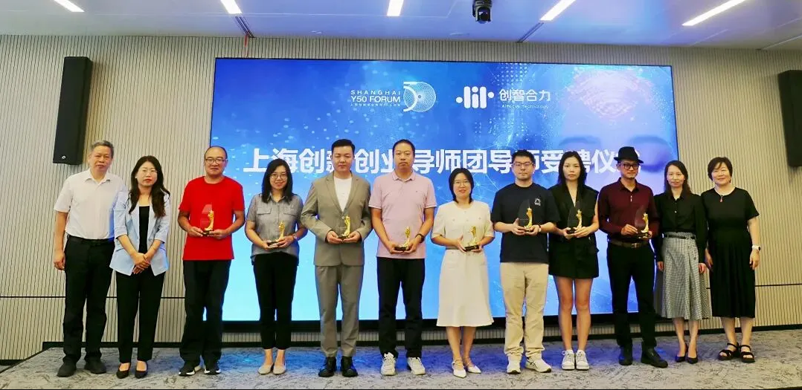
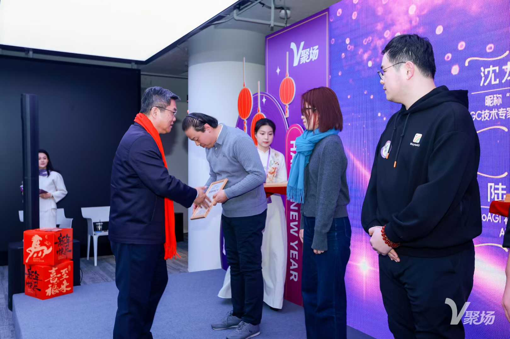
来自平台、机构与专业领域的持续认可
从技术专家到 AIGC 产品实践者，持续把经验沉淀为面向场景的能力
聚焦可直接用于业务落地的 AIGC 能力组合
来自项目现场、媒体报道与专业认可的代表性瞬间
担任总策划并首次带女儿同台分享，以真实亲子共创案例呈现 AI 在家庭场景的温度，获人民网官方专题报道。
把文学、阅读与 AI 图像生成结合，现场为 160 余位嘉宾生成「次元合影」，形成具传播力的跨界活动案例。
围绕 AI 通识、原型设计和 Debug 实操，验证亲子共创的教学方法论，获湖南省委官方主流媒体深度报道。
作为市级公益项目核心讲师长期深耕，获杨浦区委书记亲自授奖「优秀导师」，并作为代表发表数字赋能倡议。
作为 AIGC 创新创作训练营特邀导师全程参与，辅导学员团队完成从创意构思到技术落地的完整实践链路。
以「得到 2025 AI 年度报告实干家」身份做客罗振宇直播间，聚焦「如何降低抵触感」，让 AI 自然进入教育场景。
受邀为大型央企人工智能全栈培训班主讲国产大模型课程，结合轨道交通场景解析行业大模型落地实践。
专业内容持续输出，建立兼具方法论与实战经验的个人品牌影响力。
面向全国优秀班主任代表，输出可直接迁移到教学管理中的 AIGC 实践范式与研修思路。
欢迎围绕政务传播、公共服务、AI 教育赋能与内容生产效率提升展开合作交流